Jake Denton
Game Design & Development
Current games design undergraduate at Brunel University, London, with previous game development experience. I specialise in Unity prototyping and designing active, real-time game mechanics with a primary focus on fun and game feel. Excellent multimedia, IT, and writing skills backed up by a positive attitude and strong work ethic.
UNIVERSITY WORK
MIGHTY BOOT (2020) - Unity
A silly first-person action game with the core mechanics involving kicking, picking up and throwing objects from the environment and gun combat.
UNIVERSITY WORK
CYBERSCOOP (2020) - Unity
A time-attack ice-cream serving game set in a virtual cyberspace. Designed for the Leap Motion, players must use hand gestures to physically grab and manipulate objects in the game. Complete as many customer orders as you can within the time limit.
UNIVERSITY WORK
ART THIEF (2020) - Clickteam Fusion
A cheeky top-down stealth game, developed by a team of four. Players
utilise an array of tools and gadgets in order to sneak around
levels, avoid guards and traps, and ultimately complete their
mission. Objectives revolve around art and priceless artifacts.
Each member of the team was responsible for a single level each. I
worked on the Tomb level (16:49 in the video).
UNIVERSITY WORK
THE NOMAD INITIATIVE (2019) - Clickteam Fusion
Developed with a team in three months over the summer of 2019 during
our university's 'Octopus 8' development project. Built in Clickteam
Fusion, The Nomad Initiative is a futuristic action-survival game,
featuring base-building and resource management (03:16 in the
video).
Click
here
for the website.
UNIVERSITY WORK
E.V.I.L. NEVER SLEEPS (2019) - Clickteam Fusion
Prototype for a stealth-action game in which players make use of weapons and gadgets to infiltrate secret enemy lairs.
UNIVERSITY WORK
ANTHROPOMORPHIC NINJA ZEBRA (2018) - Clickteam Fusion
Prototype for a fast-paced and stylish top-down action game, inspired by 'Hotline Miami' and 'Devil Daggers'. Uses some art and audio assets from Hotline Miami 2.
PROFESSIONAL WORK
DOCTOR WHO: RETURN TO EARTH (2010) - Nintendo Wii
I was a level scripter on this project, working in the 3D level editor to implement level functionality such as moving doors, elevators, enemy patrol paths, cameras, and more.
HOBBY PROJECT
BLOCK BREAKER (2017) - Unity
The dumbest Breakout clone.
HOBBY PROJECT
DOOM LEVEL DESIGN
First map, "Tech Hell" (2018)
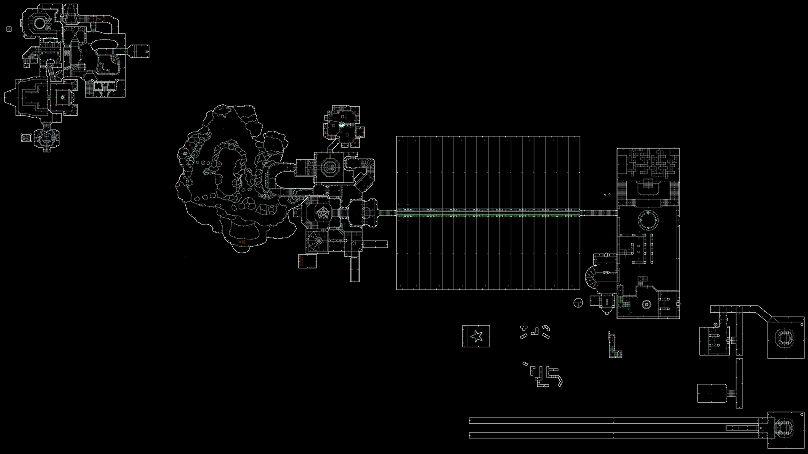 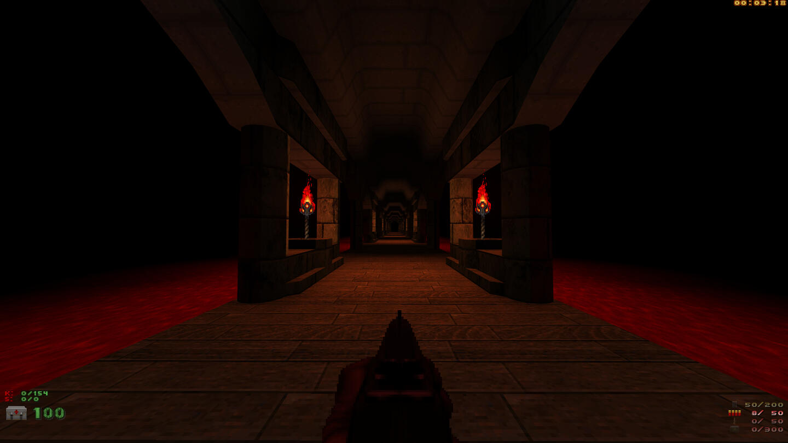 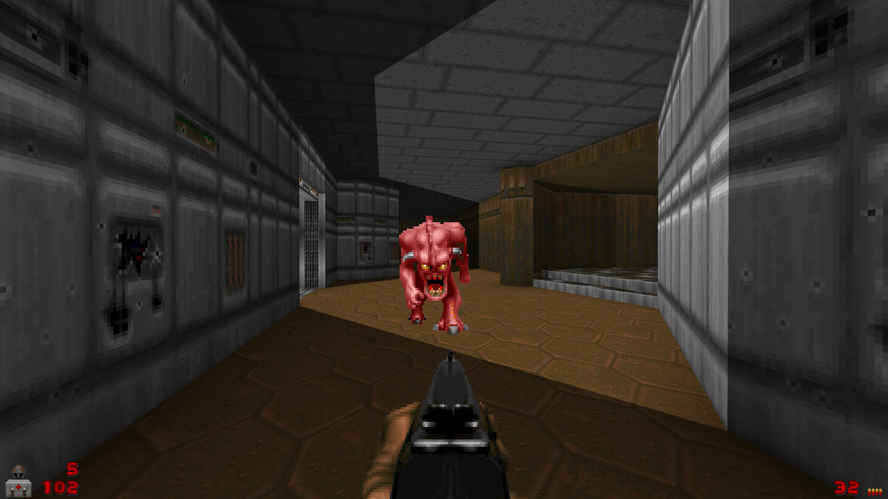 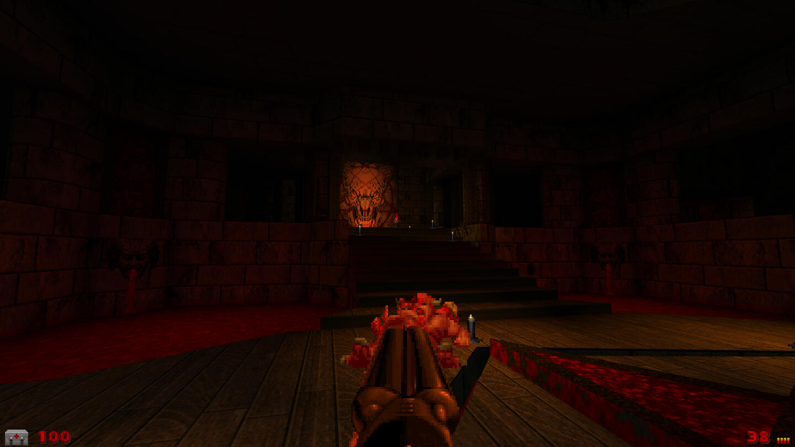 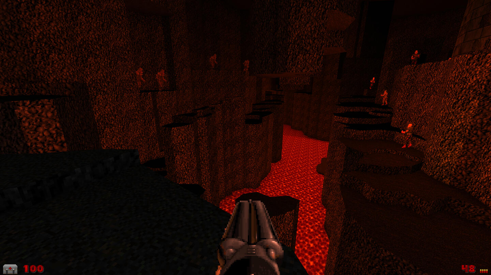 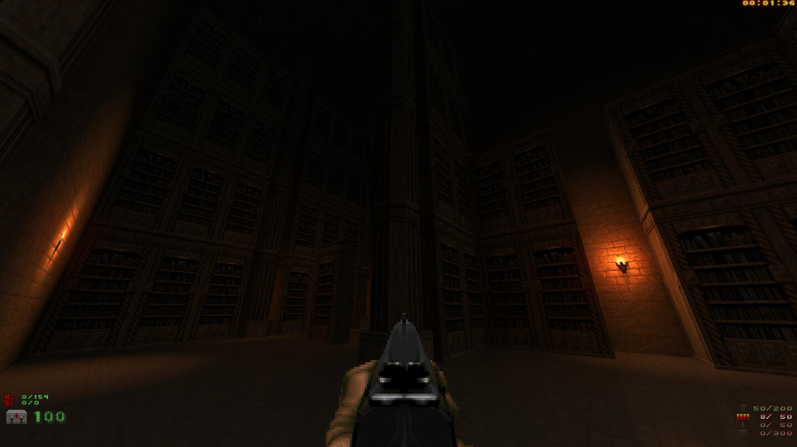 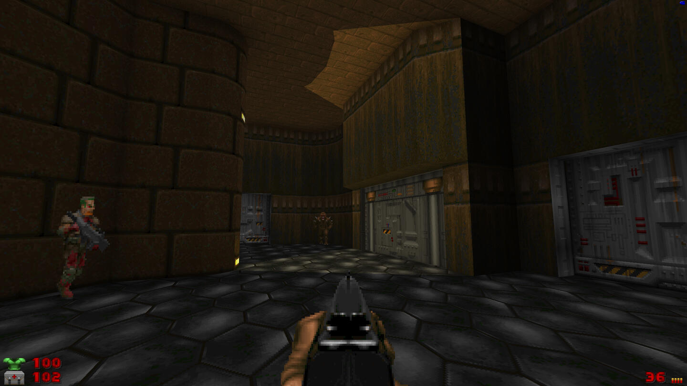 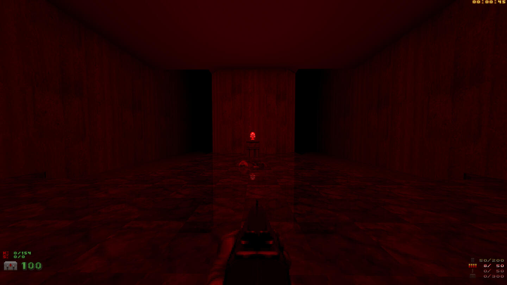 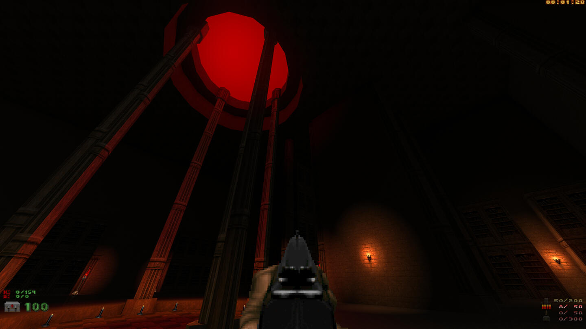
This map starts with a classic tech-base theme and transitions into a hell theme once players go through a teleporter to a different part of the map. I was playing around with 'portal' effects to create non-euclidian spaces, which is why some areas of the map appear to be splintered off from the rest of the map, or appear to be a duplicate of another area.
HOBBY PROJECT
DOOM LEVEL DESIGN
Second map, "Nukage Facility" (2019)
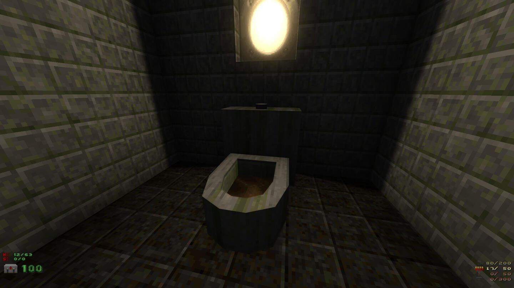 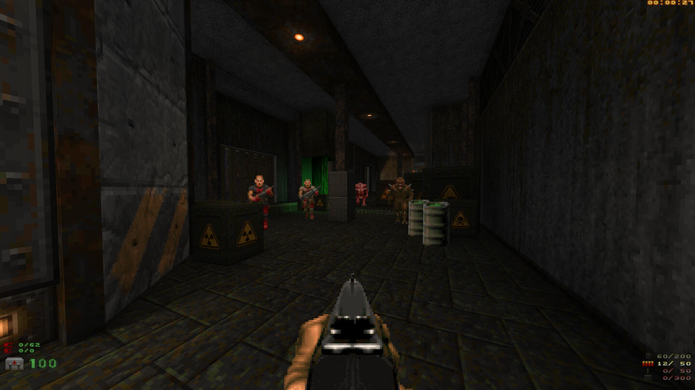 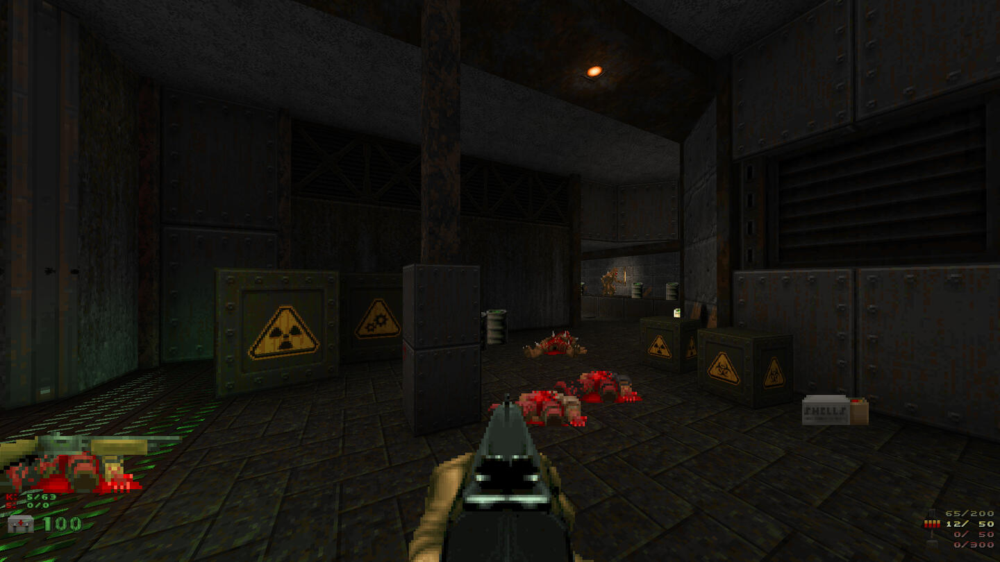 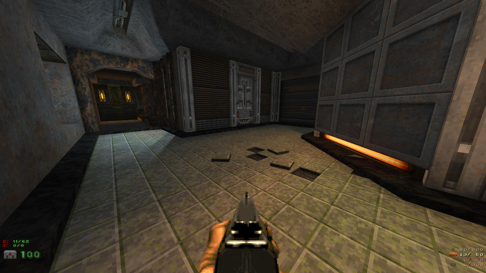 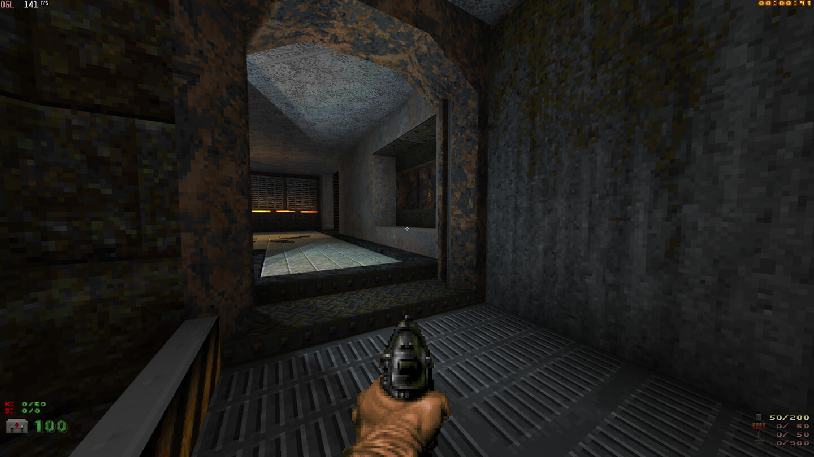 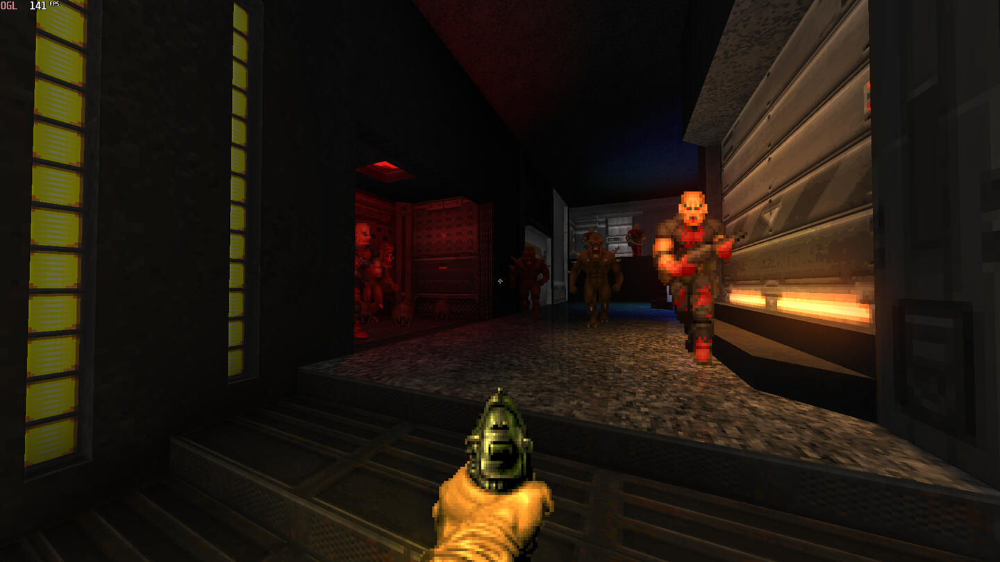
This map began life as a '1024 challenge', i.e. trying to create a map that does not exceed 1024x1024 units in the level editor. However, it has grown into something bigger. The level is themed around barrels and nukage, and the idea is that players get glimpses of how explosive barrels in the world of Doom are produced, tested, and shipped out.